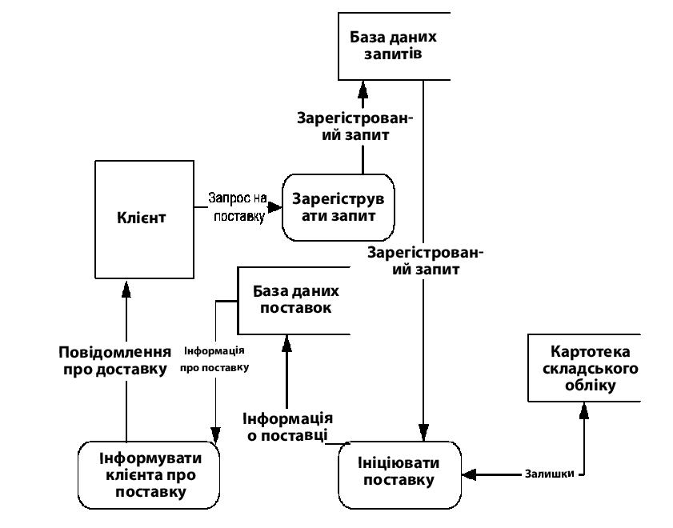

Розробка інформаційної моделі системи. Аналіз інформаційних потоків в системі та їх представлення. DFD-діаграми. Специфікація процесу.
Діаграма потоків даних
Діаграма потоків даних(data flow diagram, DFD) - один з основних інструментів структурного аналізу і проектування інформаційних систем, що існували в «доюмээльную» епоху. Незважаючи на місце, що має, в сучасних умовах зміщення акцентів від структурного до об'єктно-орієнтованого підходу до аналізу і проектування систем, «старовинні» структурні нотації як і раніше широко і ефективно використовуються як у бізнес-аналізі, так і в аналізі інформаційних систем.
Історично склалося так, що для опису діаграм DFD використовуються дві нотації - Йодана(Yourdon) і Гейна-Сарсона(Gane - Sarson), що відрізняються синтаксисом. На приведеній нижче ілюстрації використана нотація Гейна-Сарсона.

Рис. 5 Діаграма потоків даних
Інформаційна система приймає ззовні потоки даних. Для позначення елементів середовища функціонування системи використовується поняття зовнішньої суті. Усередині системи існують процеси перетворення інформації, що породжують нові потоки даних. Потоки даних можуть поступати на вхід до інших процесів, поміщатися(і витягатися) в накопичувачі даних, передаватися до зовнішніх сутностей.
Модель БИ), як і більшість інших структурних моделей - иереархическая модель. Кожен процес може бути підданий декомпозиції, тобто розбиттю на структурні складові, стосунки між якими в тій же нотації можуть бути показані на окремій діаграмі. Коли досягнута необхідна глибина декомпозиції -процесс нижнього рівня супроводжується міні-специфікацією(текстовим описом).
Крім того, нотація підтримує поняття підсистеми - структурної компоненти системи, що розробляється.
Нотація Б) - зручний засіб для формування контекстної діаграми, тобто діаграми, що показує АИС, що розробляється, в комунікації із зовнішнім середовищем. Це - діаграма верхнього рівня в ієрархії діаграм БИ). Її призначення - обмежити рамки системи, визначити, де закінчується система, що розробляється, і починається середовище. Інші нотації, часто використовувані при формуванні контекстної діаграми -диаграмма БЛОТдіаграма Діаграма варіантів використання.